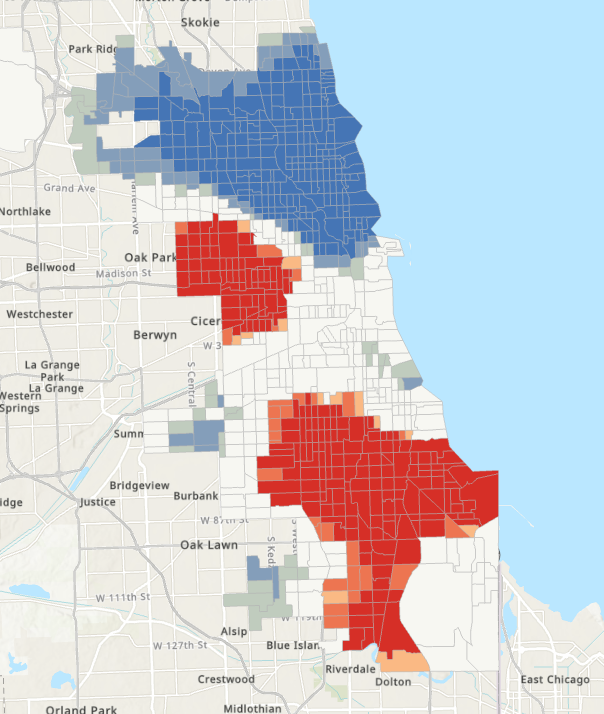
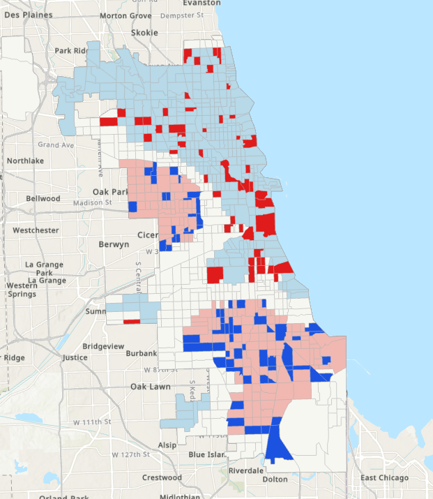
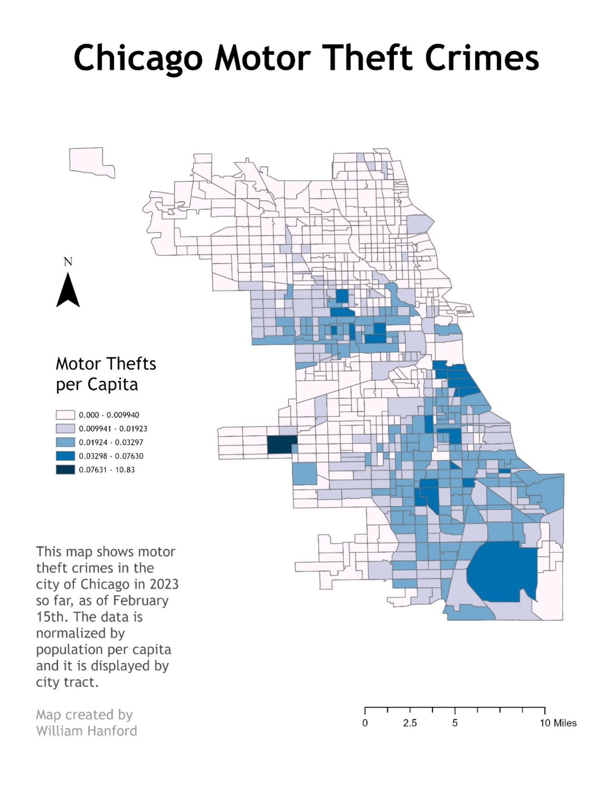
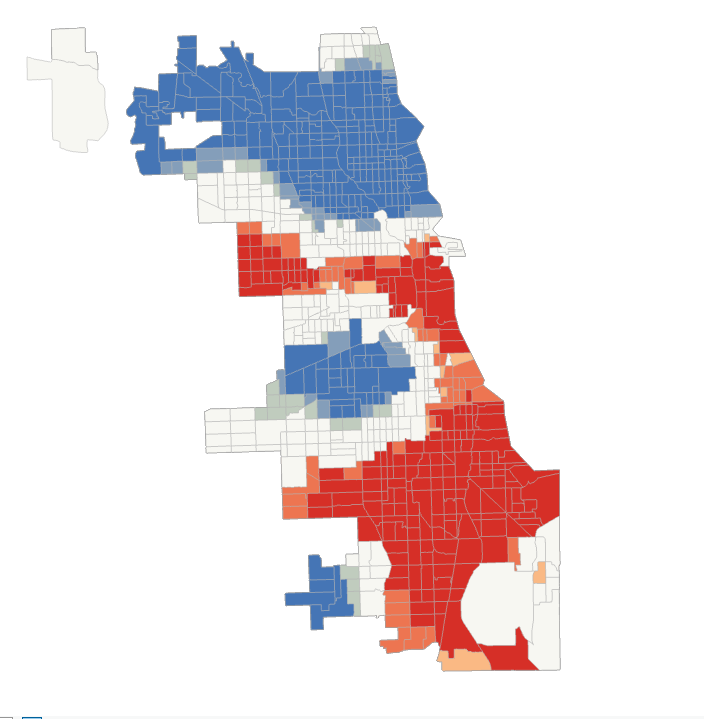
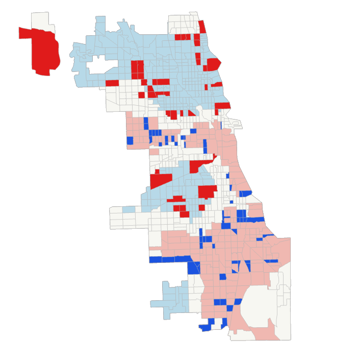

GIS Coursework / GIS II / Chicago Crime Hot Spots
Chicago Crime Hot Spots






Overview
Mapped homicide and motor vehicle theft hot spots across Chicago neighborhoods to see where each type of crime clusters.
Process
Used quantile classification plus Hot Spot Analysis and Cluster and Outlier Analysis on tract-level crime counts to identify statistically significant clusters.